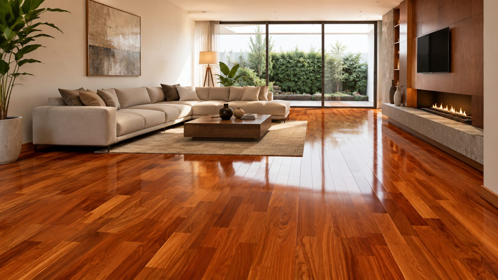
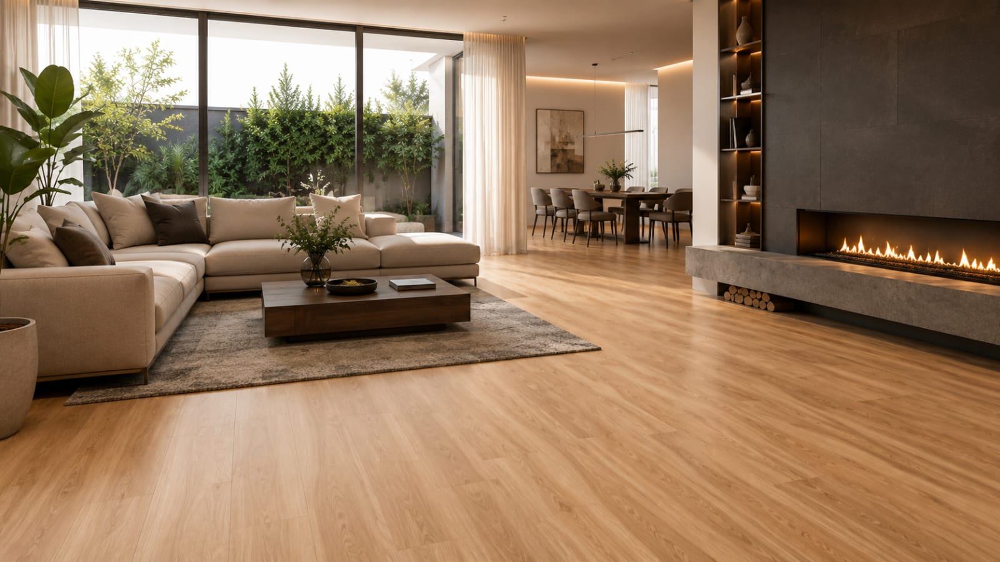
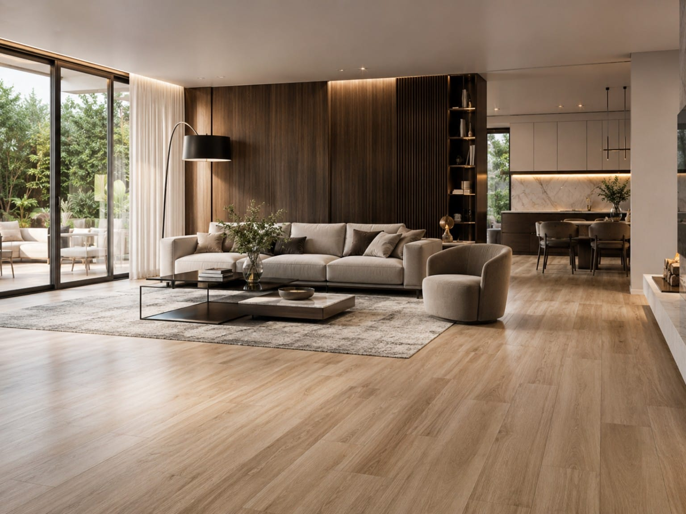
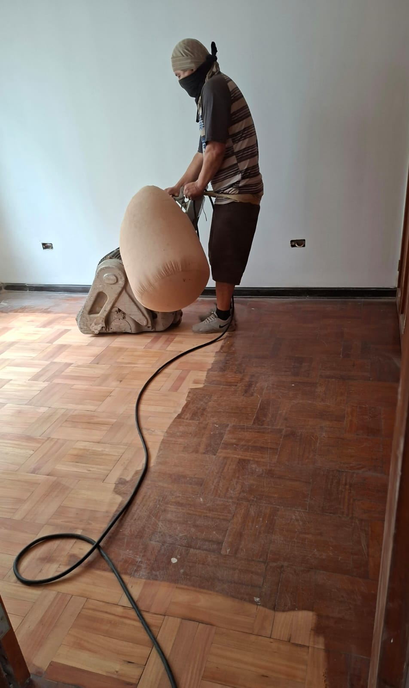
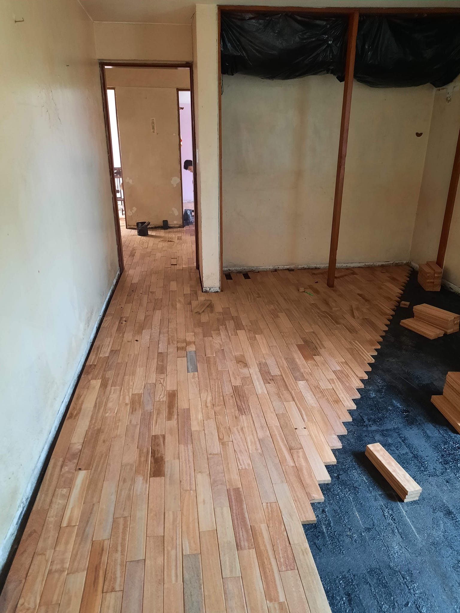
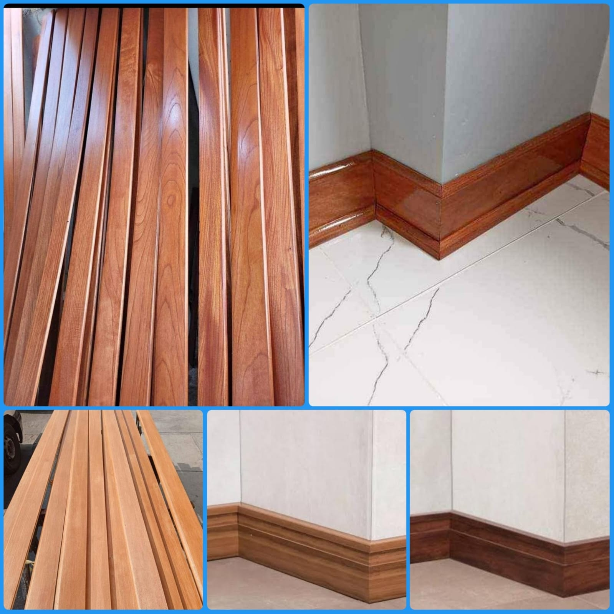
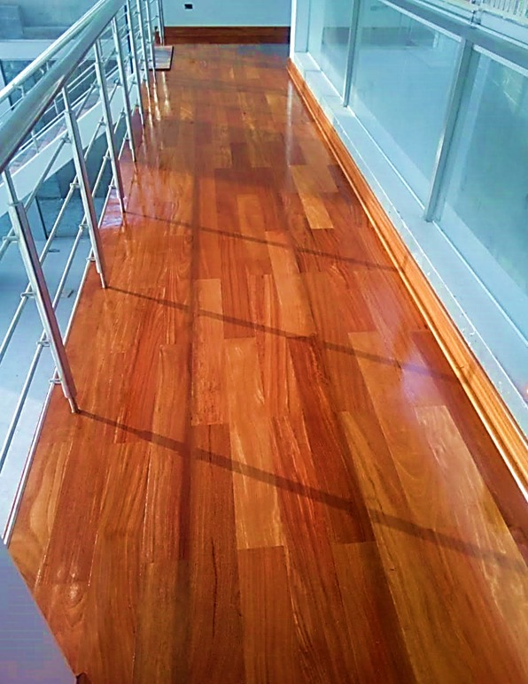
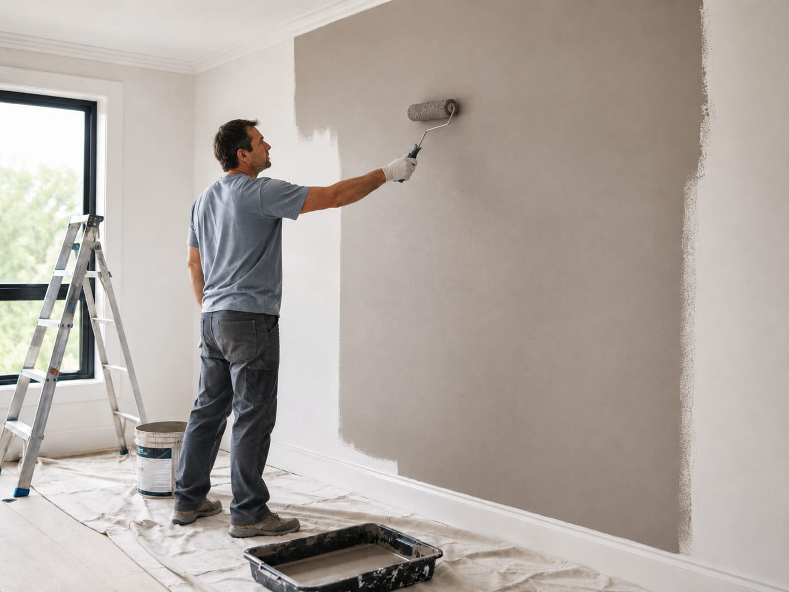

Parquet & parquetón
01La veta auténtica de la madera y una presencia que da carácter al ambiente.
Calidez naturalRestaurable*
Consultar este piso ↗PARQUET ARANIBAR · PERÚ
Pisos que se sienten tan bien como se ven. Madera natural, SPC y laminados, con instalación y acabados para cada proyecto.
De la elección del material
al último detalle del acabado.

MADERA NATURAL / CALIDEZ ATEMPORAL01 / MATERIALES CON PERSONALIDAD
Texturas, tonos y sensaciones distintas.
Te ayudamos a elegir según el uso de tu espacio, el acabado y tu presupuesto.
La veta auténtica de la madera y una presencia que da carácter al ambiente.

ESTILO CONTEMPORÁNEOUn acabado moderno y práctico, con sistema click y opciones para distintos ambientes.

EQUILIBRIO Y DISEÑOLa apariencia de la madera en una alternativa para renovar hogares, oficinas y comercios.
Imágenes de referencia. Los tonos y acabados disponibles se confirman al cotizar. *La restauración depende del estado y espesor de la madera.
UNA ELECCIÓN MÁS SENCILLA
Elige lo que más te importa y descubre qué consultar.
Cada espacio tiene necesidades distintas. Revisamos el uso, la base y el acabado antes de recomendarte un material.
Quiero asesoría ↗02 / EL VALOR ESTÁ EN LOS DETALLES
Una buena renovación combina material, preparación y acabado. Te acompañamos en cada etapa.

El cuidado del piso, desde la base.
Parquet, parquetón, SPC y laminados para viviendas, oficinas y comercios. Evaluamos el espacio y la superficie para definir la instalación.
Consultar instalación ↗Recuperamos la apariencia de pisos de madera con pulido, mantenimiento y acabados según su estado. La viabilidad se confirma tras evaluar el piso.
Consultar restauración ↗
Venta e instalación de zócalos para completar el encuentro entre piso y pared con una terminación cuidada.
Consultar acabados ↗
Mantenimiento y acabados de puertas, portones, closets y escaleras. Cuéntanos qué elemento quieres renovar.
Consultar trabajos en madera ↗
Preparación, resane y pintura de paredes para complementar la renovación de tus ambientes.
Consultar pintura ↗03 / TEXTURAS QUE SE VIVEN
Explora nuestra selección de acabados.
Abre cada detalle para verlo más de cerca.
UN PROCESO CLARO
Comparte el distrito, las medidas aproximadas y fotos del ambiente por WhatsApp.
Revisamos el material, el estado de la base y el acabado para preparar la cotización.
Acordamos el alcance y las fechas antes de comenzar la instalación o restauración.
Depende del uso, la humedad del ambiente, la superficie existente y el acabado que buscas. Te orientamos entre parquet, SPC y laminado según esas condiciones. La resistencia y los cuidados se confirman con la ficha del producto elegido.
Ofrecemos pulido, mantenimiento y restauración. Necesitamos evaluar el estado, los daños y el espesor útil de la madera para confirmar el tratamiento adecuado. Puedes enviarnos fotografías por WhatsApp.
El alcance se define según el proyecto. Indica si necesitas material, instalación, retiro del piso anterior, zócalos o restauración para que podamos precisar los trabajos incluidos.
Atendemos Lima y Callao. Los proyectos en otras ciudades del Perú se evalúan previamente según ubicación y alcance.
Tu nombre, distrito o ciudad, el servicio que buscas y los metros cuadrados aproximados si los conoces. Las fotos ayudan a evaluar el espacio. El presupuesto final depende de las condiciones del proyecto.
04 / HAGAMOS REALIDAD TU IDEA
Cuéntanos qué tienes en mente.
Prepara tu consulta y conversemos por WhatsApp.